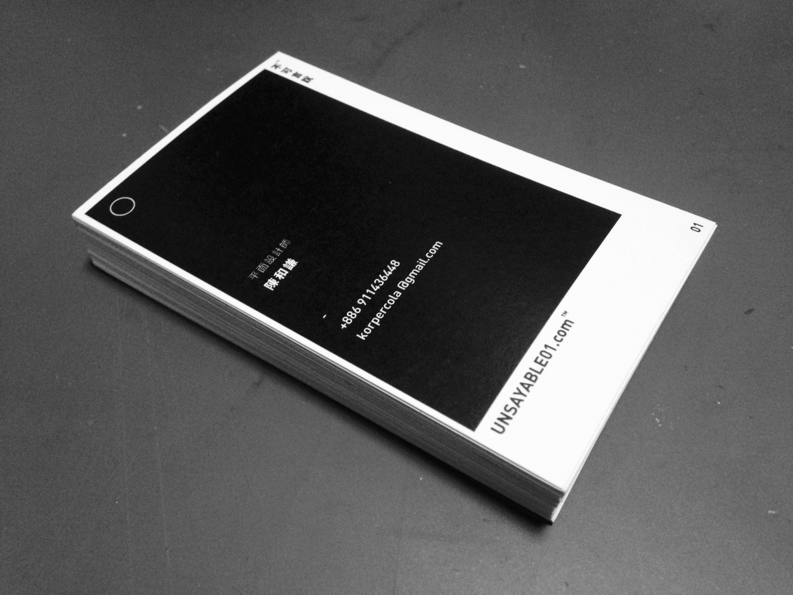

-
深夜了
你是不是和我一樣
為了成為一位設計師、藝術家
或者一位愛國浪漫詩人而熬夜著？
還是你也有著你自己的理想呢？
-
總覺得我們從小開始
就好想好想被定義成什麼
於是在「我的夢想」那篇作文裡面寫著
想當總統 想當飛行員 想當老師
想當天才 想當漫畫家 想當……
那時候覺得這些有多麼一蹴可躋
好像明天就能變成被世界所定義的
偉大的人
-
就這樣過了十年
我仍然沒有被世界定義而成偉大的人
也許還曾被貼上自以為是、廢物
或人渣之類的標籤
不過我好像也不像小時候那麼在意了。
只是不知道為什麼在十個月前
默默地開了這個粉絲專頁，
那時候還沒想過要公開
就只想著，我能隨時定義自己變成什麼樣子
可以當個藝術家 放些自己欣賞自己的藝術
可以當個設計師 做著自己理想中的設計
可以當個詩人 寫些不曾告訴別人的感觸
也許有的時候
我也能當個搞笑藝人
說著只有自己覺得好笑的 黑色的過去
-
那天，我開始想要賺錢了
我開始急迫地想要定義自己
就好像回到了小時候一樣
於是我把我這個祕密的小空間公開了
我開始瘋狂的設想該如何經營我的粉絲專頁
該如何讓我得到更多宣傳機會
這樣我就能接到更多的案子 能賺更多的錢
其實我自己也清楚知道，
在公開出去的那個剎那間我好像 碎了滿地
對，我自由了
對，我也不能再自由了
我喪失了給自己的平行世界
我失去了我自己的全世界
-
沉浸自己將近兩個星期的時間
我還接了一份展場工讀的工作
那個以前認為等著時間流逝
而沒有夢想的工作
其中認識了好多人，和好多人聊了好多事
想著長大後，
好像只是為了被定義而死命地往前爬
但其實我們都還是為了自己在一步一步地邁進
不是為了被世人定義
只是想看看自己能走到多遠。
-
這天，我做了屬於我的第一張名片
為了趕印刷店關門，
只能用比急件還趕的時間排版加上印刷
印刷店只有低磅數的紙能挑，
還只能自己手工切
字只有 6pt 那麼小，是我最喜歡的大小，
但一直被大家罵字太小
在展場工讀時，我趁著空閒鼓起勇氣發給大家我的名片
謝謝大家都很 nice 沒有拒絕收下，謝謝
不急著定義自己是誰，
因為所有的過去串聯起來的都將成為自己
現在，我想要再往前走一點。
